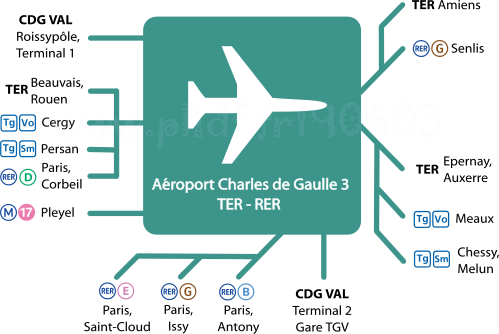

Aéroport Charles de Gaulle 3
La gare aéroport Charles-de-Gaulle 3 est une proposition de gare RER-TER pour l'aeroport de Roissy.
Sa création s'incrit dans une logique d'amélioration des liaisons entre l'aéroport de Roissy et l'Île-de-France
ou les régions limitrophes.
Cette gare serait le terminus des RER B, D et E.
Elle serait une gare de passage pour le RER G et les tangentielles Val-d'Oise et Seine-et-Marne.
La création des tangentielles et du RER G ouvrirait la possibilité de relier cette gare à Rouen (via Mantes et Épluches), Beauvais (via Persan-Beaumont), Amiens (via Survilliers et le raccordement Survilliers-Saint-Witz), Reims (via Claye-Souilly et Meaux) ou même Auxerre (via Melun et Marles-en-Brie).
Un raccordement vers la gare CDG 2 TGV pourra être envisagé pour créer des liaisons TGV entre la Normandie et Roissy en contournant Paris par le Nord.
Avec la tangentielle Seine-et-Marne, On pourra aller de l'aéroport de Roissy à Marne-la-Vallée Chessy aussi simplement qu'avec le TGV.
Le tracé de ligne 17 du métro tel que proposé dans le plan Île-de-France permettrait de relier l'aéroport de Roissy à celui du Bourget et à Saint-Denis tout en desservant les communes du Val-d'Oise à proximité de l'aéroport comme Garges, Gonesse et Le Thillay.
Carte
{kind=link}

Cliquer pour agrandir
Propositions associés à cette gare
Si vous êtes intéressé par les propositions associés à cette station (re-)partagez cette page sur les réseaux sociaux ou par courriel ou parlez-en autour de vous.
Si vous souhaitez travailler à la concrétisation de ces propositions, passez à l'action et contactez nous.
Commenter